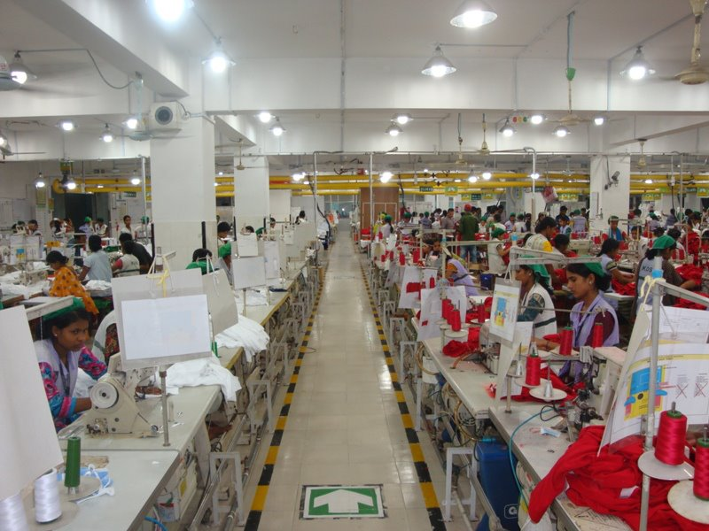
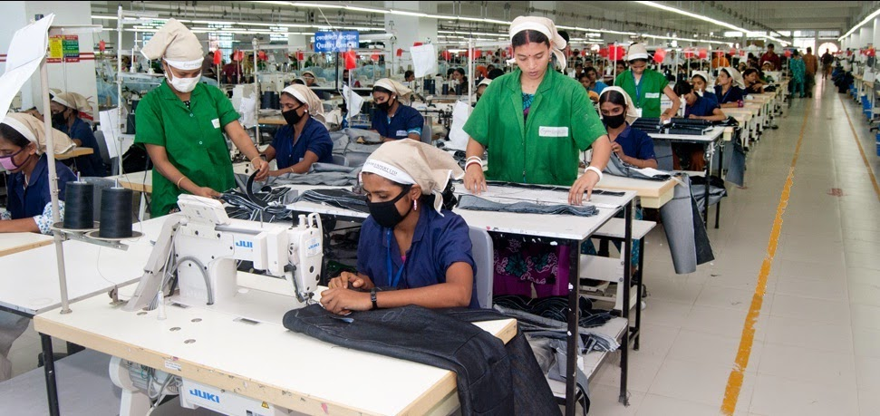
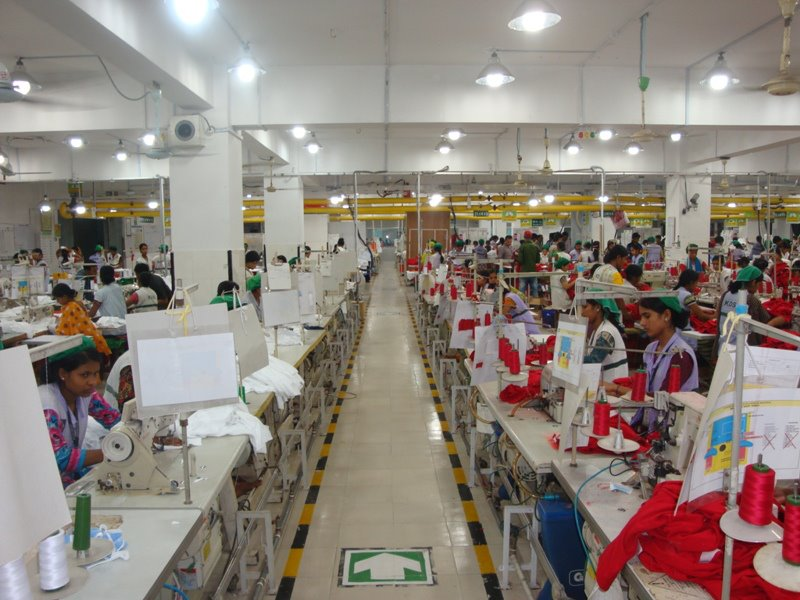
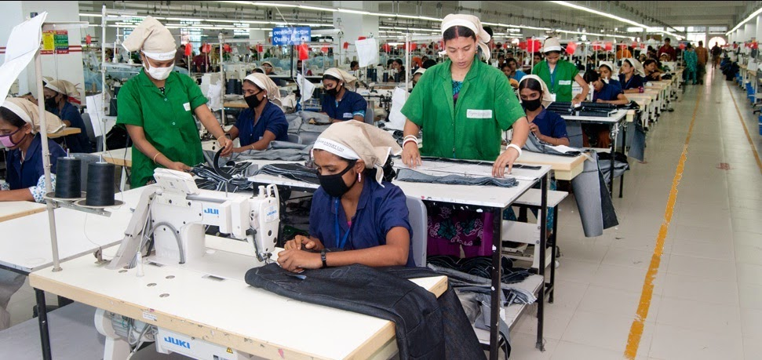

Versatile Apparel is a garments company located in Bangladesh. The company has a large assembly line that is responsible for the production of a variety of garments, including T-shirts, polo shirts, and trousers. The assembly line is divided into several stations, each of which is responsible for a specific task in the production process.
The first station on the assembly line is the cutting station. At this station, fabric is cut into the appropriate shapes and sizes for the garments being produced. The next station is the sewing station. At this station, the pieces of fabric are sewn together to create the garments. The final station on the assembly line is the finishing station. At this station, the garments are inspected for quality and then packaged for shipping.
Email: info@company.com
Phone: 123-456-7890
Address: 123 Street, City, Country